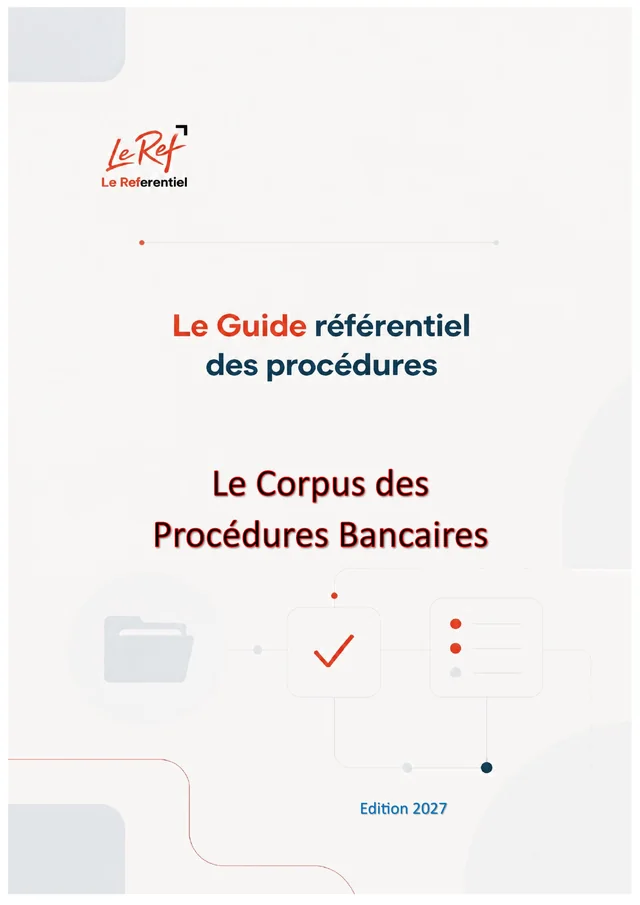

Maroc · BANC · Édition 2027
Procédures bancaires et établissements financiers
Le Corpus des Procédures Bancaires
À l'usage des opérateurs économiques et des investisseurs : agréments, relation bancaire, financement, change, garanties et recours
- 121paragraphes
- 29chapitres
- 7parties
- 30fichiers JSON
- 98pages (PDF)
Disponible prochainement (option d'achat)
Pages préliminaires et annexes
Contenu
121 paragraphes · 29 chapitres · un fichier JSON par chapitrePartie 1Cadre institutionnel
15 paragraphes
1.1 Les notions fondamentales et le monopole bancaire
- 1-001Cadre institutionnel — présentation
- 1-002Qu'est-ce qu'un établissement de crédit ?
- 1-003Les trois opérations de banque
- 1-004Le monopole bancaire et ses exceptions
- 1-005Les opérations connexes autorisées aux établissements de crédit
- 1-006Les catégories d'établissements et d'organismes assimilés
- 1-007Conglomérats financiers
Partie 2Investir dans le secteur financier
34 paragraphes
2.3 Établissements de paiement, monnaie électronique et fintech
- 2-020Les services de paiement
- 2-021Régime de l'établissement de paiement (circulaires 6/W/2016 et 7/W/16)
- 2-022Transferts de fonds
- 2-023Comptes de paiement : trois niveaux de KYC
- 2-024Réseau d'agents de paiement
- 2-025Paiement mobile domestique (m-wallet)
- 2-026Ouverture du marché de l'acquisition monétique
2.8 Après l'agrément : gouvernance, prudentiel et obligations permanentes
- 2-070Après l'agrément : gouvernance, prudentiel et obligations permanentes — présentation
- 2-071Gouvernance et contrôle interne
- 2-072Normes prudentielles principales
- 2-073Comptabilité, commissaires aux comptes et publication
- 2-074Plan de redressement de crise interne (circulaire 4/W/2017)
- 2-075Mesures de supervision et sanctions
Partie 3L'entreprise et sa banque
32 paragraphes
3.1 Entrer en relation avec une banque : ouverture de compte et vigilance (KYC)
- 3-001L'entreprise et sa banque — présentation
- 3-002Pourquoi la banque demande autant de documents
- 3-003Le bénéficiaire effectif
- 3-004Check-list d'ouverture de compte
- 3-005Ouverture à distance et depuis l'étranger
- 3-006Clients à risque élevé et vigilance renforcée
- 3-007Le droit au compte et les services gratuits
- 3-008La convention de compte
3.2 Monter et négocier un dossier de crédit
- 3-010Les pièces financières exigées selon la taille de l'entreprise (directive 1/G/2005)
- 3-011Vos droits pendant l'instruction (directive 3/W/2022)
- 3-012Le coût du crédit : taux, TEG et plafonds
- 3-013Spécificités des sociétés de financement (directive 1/G/11)
- 3-014Le crédit aux particuliers et aux consommateurs (loi n° 31-08)
3.3 Garanties, impayés et classement des créances
- 3-020Garanties, impayés et classement des créances — présentation
- 3-021Les trois classes de créances (circulaire 19/G/2002 modifiée)
- 3-022Valeur des garanties pour la banque
- 3-023La réforme de 2025 (circulaire 1/W/2025, applicable au 1er janvier 2027)
- 3-024Dation en paiement et vente à réméré (directive 4/W/2021)
- 3-025Mainlevée des sûretés après remboursement (directive 4/W/2019)
- 3-026Le recouvrement amiable : code éthique